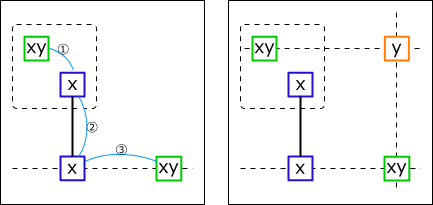
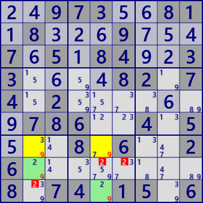
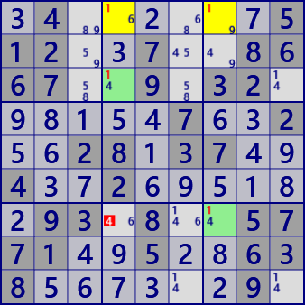

W-Wing
W-Wing is an analysis algorithm composed of bivalue cell and link.
Assume that a pair of bivalue cells(green frames) with the same candidate numbers(x,y)
are associated with ①weak link ②strong link ③weak link of number x(Left figure).
It is explained in the following figure.
Let's assume that a pair of bivalue cells (green frames) with the same candidate numbers (x, y) are associated
with ① weak link ② strong link ③ weak link of number x. (Left figure).
At this time, the cell(orange frame) related to the two bivalue cells(green frame)
can not have the candidate number y(right picture).
W
The analysis algorithm is as follows.
- Create a list of bivalue cells
- Choose 2 cells(P,Q) by combination from the list of bivalue cells.
(Check that P and Q have the same candidate number and belong to different House) - Choose one strong link L.
(Both end cells of L form a weak link with P, Q. - Check whether there are exclusion candidates in the common part of P influence zone and Q influence zone.
Here is an example of XY-Wing. In the scene on the right, there are 9 W-Wings in all, including this solution.
 ..973..81.8...9...7.5.84..33....82.74.2.......786..4.5...8.6..26........8.74.15.6
.4......512..7..8667..9.32......7..2..28.37..4..2......93.8..5771..5..638......9.
XY-Wing C# program
The following is an analysis program of W-Wing. The above algorithm is coded in order.
i will supplement one point only.
"P and Q are weak link" is checked by the ConnectedCells function,
instead of searching for weak links.
public partial class CellLinkGen: AnalyzerBaseV2{
public bool Wwing( ){
if(BVCellLst==null) BVCellLst = pBDL.FindAll(p=>(p.FreeBC==2)); //BV:bivalue
if(BVCellLst.Count<2) return false;
BVCellLst.Sort((A,B)=>(A.FreeB-B.FreeB));
CeLKMan.PrepareCellLink(1); //strong Link
bool Wwing=false;
var cmb = new Combination(BVCellLst.Count,2);
int nxt=99;
while(cmb.Successor(nxt)){
UCell P=BVCellLst[cmb.Cmb[0]];
UCell Q=BVCellLst[cmb.Cmb[1]];
nxt=0;
if( P.FreeB!=Q.FreeB ) continue;
nxt=1;
if( ConnectedCells[P.rc].IsHit(Q.rc) ) continue;
foreach( var L in CeLKMan.IEGetCellInHouse(1) ){//1:strong
int no1B=(1<<L.no);
if( (P.FreeB&no1B)==0 ) continue;
if( L.rc1==P.rc || L.rc2==Q.rc ) continue;
if( !ConnectedCells[P.rc].IsHit(L.rc1) ) continue;
if( !ConnectedCells[Q.rc].IsHit(L.rc2) ) continue;
int no2B=P.FreeB.BitReset(L.no);
string msg2="";
Bit81 Elm= ConnectedCells[P.rc] & ConnectedCells[Q.rc];
foreach( var E in Elm.IEGetUCeNoB(pBDL,no2B) ){
E.CancelB=no2B; Wwing=true; //W-Wing fond
if(SolInfoDsp) msg2 += " "+E.rc.ToRCString();
}
if(Wwing){
.
. (Solution report code)
.
return true;
}
}
}
return false;
}
}